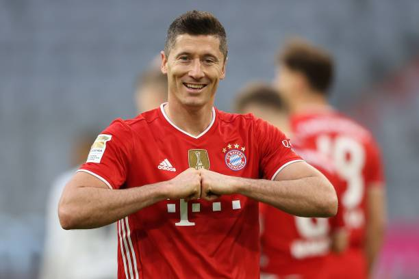
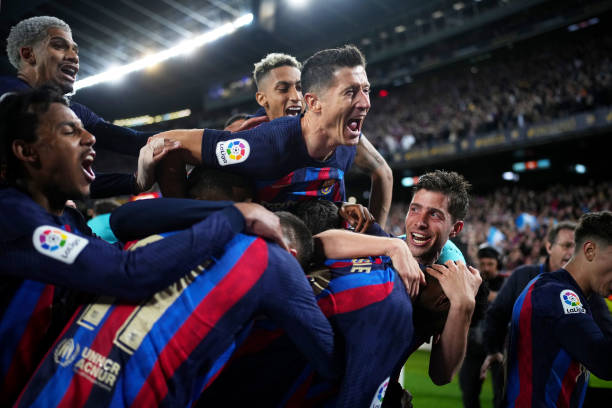

Robert Lewandowski
Biography
Gallery
Private Life
Career
Achievements
Gallery
Borussia Dortmund (2010-2014)
Bayern Munich (2014-2022)

FC Barcelona (2022-present)

Poland national football team (2008-present)